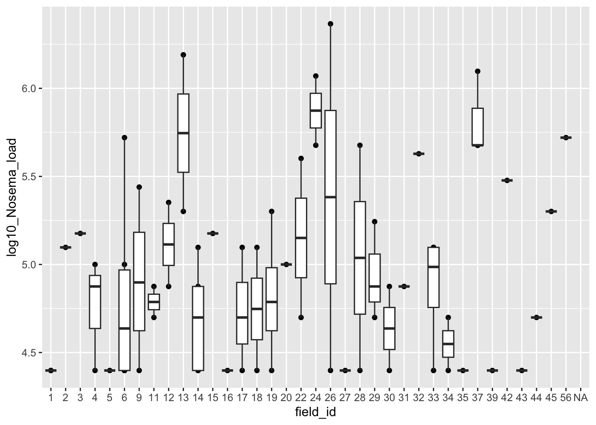

######HW 13
###Jackson D'Elia
###April 15
getwd()[1] "/Users/jacksondelia/Documents/GitHub/Website/docs"###
#load libraries, load data. Using bee disease data wide.
library(tidyverse)Warning: package 'ggplot2' was built under R version 4.5.2Warning: package 'tidyr' was built under R version 4.5.2Warning: package 'readr' was built under R version 4.5.2Warning: package 'purrr' was built under R version 4.5.2Warning: package 'lubridate' was built under R version 4.5.2── Attaching core tidyverse packages ──────────────────────── tidyverse 2.0.0 ──
✔ dplyr 1.1.4 ✔ readr 2.1.6
✔ forcats 1.0.1 ✔ stringr 1.6.0
✔ ggplot2 4.0.2 ✔ tibble 3.3.0
✔ lubridate 1.9.5 ✔ tidyr 1.3.2
✔ purrr 1.2.1
── Conflicts ────────────────────────────────────────── tidyverse_conflicts() ──
✖ dplyr::filter() masks stats::filter()
✖ dplyr::lag() masks stats::lag()
ℹ Use the conflicted package (<http://conflicted.r-lib.org/>) to force all conflicts to become errorslibrary(lubridate)
library(lme4)Warning: package 'lme4' was built under R version 4.5.2Loading required package: Matrix
Attaching package: 'Matrix'
The following objects are masked from 'package:tidyr':
expand, pack, unpacklibrary(car)Warning: package 'car' was built under R version 4.5.2Loading required package: carDataWarning: package 'carData' was built under R version 4.5.2Registered S3 method overwritten by 'car':
method from
na.action.merMod lme4
Attaching package: 'car'
The following object is masked from 'package:dplyr':
recode
The following object is masked from 'package:purrr':
somebee_dat <- read_csv("Burnham_field_data_pathogens_wide.csv")Rows: 298 Columns: 14
── Column specification ────────────────────────────────────────────────────────
Delimiter: ","
chr (5): sampling_date, site_code, bombus_spp, host_plant, bee_caste
dbl (9): id, field_id, sampling_event, BQCV_pathogen_binary, DWV_pathogen_bi...
ℹ Use `spec()` to retrieve the full column specification for this data.
ℹ Specify the column types or set `show_col_types = FALSE` to quiet this message.bee_dat <- bee_dat %>%
mutate(
sampling_date = mdy(sampling_date),
site_code = factor(site_code),
field_id = factor(field_id),
bee_caste = factor(bee_caste),
bombus_spp = factor(bombus_spp),
host_plant = factor(host_plant),
sampling_event = factor(sampling_event),
sampling_event_num = as.numeric(as.character(sampling_event)),
log10_BQCV_load = log10(BQCV_pathogen_load + 1),
log10_DWV_load = log10(DWV_pathogen_load + 1),
log10_Nosema_load = log10(Nosema_pathogen_load + 1)
)
glimpse(bee_dat)Rows: 298
Columns: 18
$ id <dbl> 1, 3, 4, 5, 6, 8, 10, 11, 12, 13, 15, 16, 17, 1…
$ sampling_date <date> 2020-09-09, 2020-09-10, 2020-09-10, 2020-09-09…
$ site_code <fct> BOST, MUDGE, MUDGE, BOST, CIND, MUDGE, CIND, BO…
$ field_id <fct> 6, 18, 11, 11, 14, 4, 13, 38, 5, 12, 18, 23, 20…
$ bombus_spp <fct> impatiens, impatiens, impatiens, impatiens, imp…
$ host_plant <fct> solidago, crown vetch, crown vetch, solidago, k…
$ bee_caste <fct> worker, worker, worker, male, worker, worker, w…
$ sampling_event <fct> 4, 4, 4, 4, 4, 4, 4, 2, 4, 4, 4, 4, 4, 4, 4, 4,…
$ BQCV_pathogen_binary <dbl> 1, 1, 0, 0, 1, 1, 1, 1, 0, 1, 0, 1, 1, 1, 0, 1,…
$ DWV_pathogen_binary <dbl> 1, 1, 0, 0, 1, 1, 1, 0, 0, 0, 0, 0, 0, 0, 0, 1,…
$ Nosema_pathogen_binary <dbl> NA, 0, 1, NA, 0, NA, 0, 0, 0, 0, 1, 0, 0, 0, 0,…
$ BQCV_pathogen_load <dbl> 2414168.8, 760793.2, 0.0, 0.0, 124236.8, 413814…
$ DWV_pathogen_load <dbl> 85329.54, 45153.03, 0.00, 0.00, 215750.28, 2769…
$ Nosema_pathogen_load <dbl> NA, 0, 225000, NA, 0, NA, 0, 0, 0, 0, 50000, 0,…
$ sampling_event_num <dbl> 4, 4, 4, 4, 4, 4, 4, 2, 4, 4, 4, 4, 4, 4, 4, 4,…
$ log10_BQCV_load <dbl> 6.382768, 5.881267, 0.000000, 0.000000, 5.09425…
$ log10_DWV_load <dbl> 4.931105, 4.654697, 0.000000, 0.000000, 5.33395…
$ log10_Nosema_load <dbl> NA, 0.000000, 5.352184, NA, 0.000000, NA, 0.000…df_filtered <- bee_dat[bee_dat$log10_Nosema_load > 0 & bee_dat$log10_BQCV_load > 0, ]
########
#MODEL 1
########
g_Nosema_by_field <- glm(
log10_Nosema_load ~ field_id,
data = df_filtered)
by_field <- Anova(g_Nosema_by_field)
print(by_field)Analysis of Deviance Table (Type II tests)
Response: log10_Nosema_load
LR Chisq Df Pr(>Chisq)
field_id 52.246 35 0.03056 *
---
Signif. codes: 0 '***' 0.001 '**' 0.01 '*' 0.05 '.' 0.1 ' ' 1#Nosema load by field where sample was collected.
#this asks if location is a factor in nosema infection load.
#hypothesis: Nosema can be transmitted via flower visitation. Nosema load will differ across sites as some places will be disease 'hotspots'
#Graph of Nosema load by field site
qplot(
x = field_id,
y = log10_Nosema_load,
data = df_filtered) +
geom_boxplot(method = "lm", se = TRUE)Warning: `qplot()` was deprecated in ggplot2 3.4.0.Warning in geom_boxplot(method = "lm", se = TRUE): Ignoring unknown parameters:
`method` and `se`Warning: Removed 27 rows containing non-finite outside the scale range
(`stat_boxplot()`).Warning: Removed 27 rows containing missing values or values outside the scale range
(`geom_point()`).